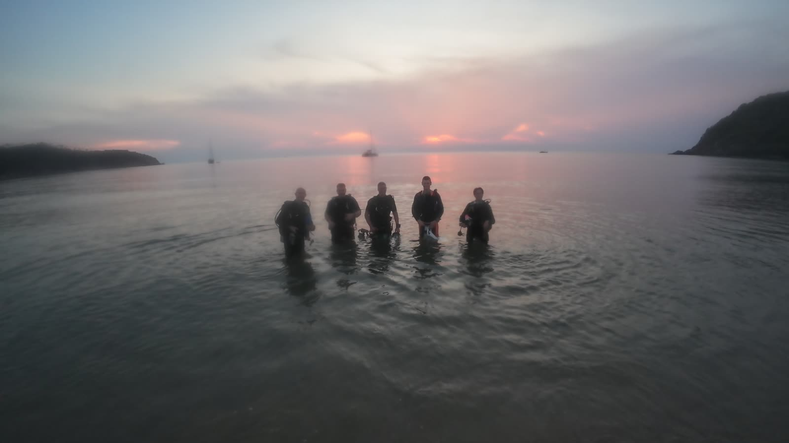
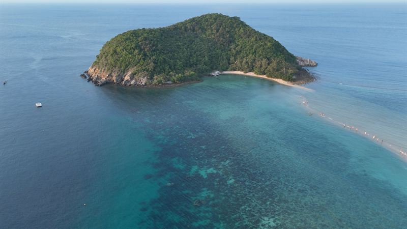
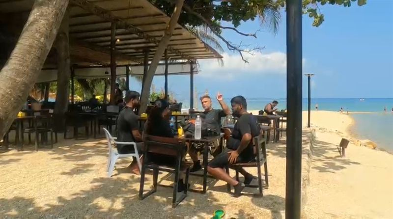
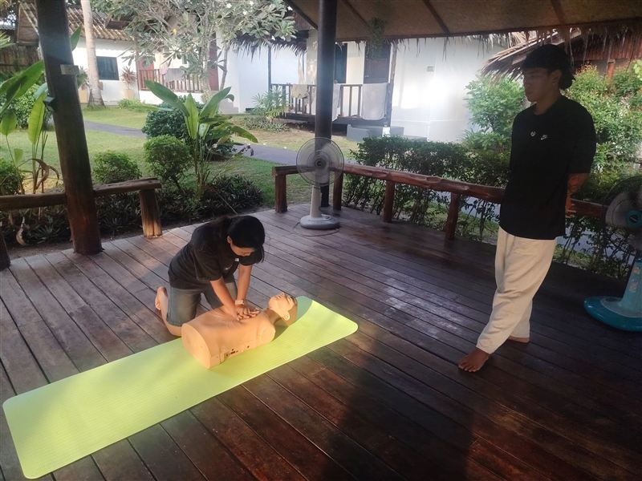

Theorie und Übungen
Rettungstheorie, dann jede Technik im geschützten Wasser, bis sie sich natürlich anfühlt.
Bis Weihnachten fahren wir um 8:00 ab: Treffpunkt am Pier von Chaloklum um 7:45, zurück gegen 13:30–14:00.Warum?


Koh Ma · ruhig, flach, ohne Strömung
Auf einen Blick
Beim Rescue Diver geht es darum, auf die Menschen aufzupassen, mit denen du tauchst: Stress erkennen, bevor er zu Panik wird, einen vermissten Taucher finden und einen bewusstlosen Taucher sicher an die Oberfläche und aus dem Wasser bringen.
So läuft der Kurs ab
Der erste Tag baut die Fertigkeiten einzeln auf. Der zweite setzt sie in realistischen Szenarien an Koh Ma zusammen, einem ruhigen Korallengarten zehn Minuten von Chaloklum.
Rettungstheorie, dann jede Technik im geschützten Wasser, bis sie sich natürlich anfühlt.
Einen gestressten Taucher erkennen, ihn beruhigen und ihm helfen, an der Oberfläche und unter Wasser.
Ein Suchmuster organisieren, um einen Taucher zu finden, der die Gruppe verloren hat.
Einen bewusstlosen Taucher an die Oberfläche bringen, beatmen und aus dem Wasser holen.
Eine schriftliche Prüfung, um letzte Fragen zu klären — optional, wenn du die Prüfung schon online bestanden hast.

Mittagessen an Koh Ma zwischen den Einheiten
Wie wir unterrichten
Rettungsübungen sind nur nützlich, wenn sie sich echt anfühlen, und nur verantwortungsvoll, wenn sie sicher sind. Deshalb findet jede Übung auf maximal 9 Metern statt, im ruhigen Wasser von Koh Ma.
Tag zwei verbindet Theorie, Praxis und ein richtiges Mittagessen in einem Restaurant, mit Zeit, jedes Szenario zu besprechen, bevor das nächste kommt.

Herz-Lungen-Wiederbelebung üben · Erste-Hilfe-Kurs
Wer kann mitmachen
Noch keinen Erste-Hilfe-Kurs? Wir bieten SSI React Right im Laden an: Erste Hilfe, Sauerstoffgabe und Herz-Lungen-Wiederbelebung in etwa zwei Stunden, für 4.300฿. Du weißt nicht, ob dein eigener Kurs zählt? Schick uns ein Foto des Zertifikats auf WhatsApp.
Fragen
11.600฿ pro Person, inklusive SSI-Instructor, kompletter Ausrüstung, Mittagessen an Tag zwei und Brevet.
Zwei Tage: Theorie und Übungen im geschützten Wasser am ersten Tag und drei Rettungsszenarien an Koh Ma am zweiten.
Ein Open-Water-Diver-Brevet sowie den SSI-Spezialkurs React Right oder den Nachweis eines Erste-Hilfe- und Sauerstoff-Kurses aus den letzten zwei Jahren. Das Mindestalter ist 12.
Ja. Wir unterrichten SSI React Right im Laden in etwa zwei Stunden, für 4.300฿. Er umfasst Erste Hilfe, Sauerstoffgabe und Herz-Lungen-Wiederbelebung, und du kannst ihn am Tag vor deinem Rescue-Kurs machen.
Nie tiefer als 9 Meter. Die Szenarien finden im ruhigen, strömungsfreien Wasser von Koh Ma statt.
Drei Einheiten: einen gestressten Taucher betreuen und sich um einen anderen Taucher kümmern, einen vermissten Taucher suchen und einen bewusstlosen Taucher an die Oberfläche und aus dem Wasser bringen.
Ja. Am Ende machen wir im Laden eine schriftliche Prüfung, um letzte Fragen zu klären. Wenn du die Prüfung schon online bestanden hast und sie nicht auf Papier wiederholen möchtest, musst du das nicht.
Schick uns deine Daten und ein Foto deines Erste-Hilfe-Zertifikats auf WhatsApp, und wir bestätigen deinen Platz.
Siehe auch unsere Deep- und Nitrox-Kurse oder alle unsere Kurse.